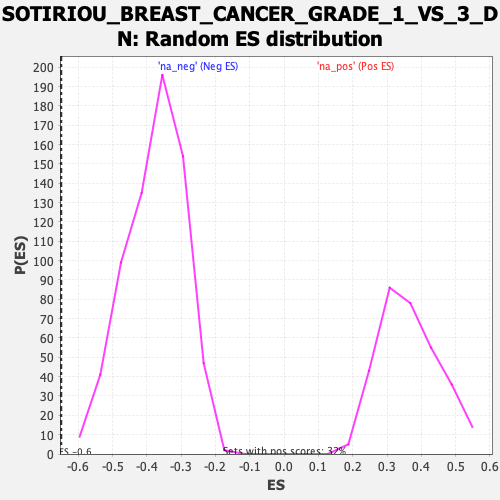

| | | Dataset | DE_genes |
| Phenotype | NoPhenotypeAvailable |
| Upregulated in class | na_neg |
| GeneSet | SOTIRIOU_BREAST_CANCER_GRADE_1_VS_3_DN |
| Enrichment Score (ES) | -0.64939433 |
| Normalized Enrichment Score (NES) | -1.7312896 |
| Nominal p-value | 0.0 |
| FDR q-value | 0.030105261 |
| FWER p-Value | 0.338 |
Table: GSEA Results Summary
 Fig 1: Enrichment plot: SOTIRIOU_BREAST_CANCER_GRADE_1_VS_3_DN
Fig 1: Enrichment plot: SOTIRIOU_BREAST_CANCER_GRADE_1_VS_3_DN
Profile of the Running ES Score & Positions of GeneSet Members on the Rank Ordered List
| PROBE | GENE SYMBOL | GENE_TITLE | RANK IN GENE LIST | RANK METRIC SCORE | RUNNING ES | CORE ENRICHMENT | | 1 | PIGV | | | 1337 | 0.595 | -0.0748 | No |
| 2 | BBS1 | | | 1476 | 0.530 | -0.0732 | No |
| 3 | NME5 | | | 1499 | 0.518 | -0.0643 | No |
| 4 | DIXDC1 | | | 1651 | 0.452 | -0.0651 | No |
| 5 | TPT1 | | | 1785 | 0.397 | -0.0659 | No |
| 6 | IFT46 | | | 2447 | 0.216 | -0.1044 | No |
| 7 | SLC24A1 | | | 2591 | 0.193 | -0.1098 | No |
| 8 | IFT88 | | | 4716 | 0.030 | -0.2470 | No |
| 9 | SMARCA2 | | | 5831 | -0.028 | -0.3186 | No |
| 10 | ZFP2 | | | 6711 | -0.089 | -0.3738 | No |
| 11 | DZANK1 | | | 6977 | -0.109 | -0.3889 | No |
| 12 | SYNC | | | 7328 | -0.139 | -0.4088 | No |
| 13 | SNX1 | | | 7609 | -0.162 | -0.4237 | No |
| 14 | WDR19 | | | 7650 | -0.166 | -0.4230 | No |
| 15 | SIRT3 | | | 7676 | -0.168 | -0.4213 | No |
| 16 | ARHGEF12 | | | 8382 | -0.238 | -0.4623 | No |
| 17 | RUNX1 | | | 8651 | -0.268 | -0.4743 | No |
| 18 | STAT5B | | | 8787 | -0.284 | -0.4774 | No |
| 19 | ARHGEF40 | | | 9283 | -0.345 | -0.5026 | No |
| 20 | NF1 | | | 9691 | -0.402 | -0.5210 | No |
| 21 | CX3CR1 | | | 10151 | -0.470 | -0.5414 | No |
| 22 | AASS | | | 10230 | -0.481 | -0.5369 | No |
| 23 | DYNC2H1 | | | 10757 | -0.561 | -0.5598 | No |
| 24 | NBR1 | | | 10763 | -0.562 | -0.5489 | No |
| 25 | RNASE4 | | | 11056 | -0.607 | -0.5558 | No |
| 26 | TP53BP1 | | | 11162 | -0.629 | -0.5501 | No |
| 27 | ECHDC2 | | | 11206 | -0.637 | -0.5402 | No |
| 28 | KIF13B | | | 11762 | -0.754 | -0.5612 | No |
| 29 | FRY | | | 12174 | -0.849 | -0.5709 | No |
| 30 | CRTC3 | | | 13385 | -1.207 | -0.6254 | Yes |
| 31 | LAMB2 | | | 13392 | -1.211 | -0.6017 | Yes |
| 32 | STARD13 | | | 13489 | -1.248 | -0.5831 | Yes |
| 33 | CTDSP1 | | | 13527 | -1.264 | -0.5603 | Yes |
| 34 | ZNF862 | | | 13597 | -1.292 | -0.5391 | Yes |
| 35 | CASP9 | | | 13664 | -1.316 | -0.5172 | Yes |
| 36 | SESN1 | | | 13809 | -1.385 | -0.4989 | Yes |
| 37 | TBC1D17 | | | 13878 | -1.415 | -0.4752 | Yes |
| 38 | AKAP11 | | | 13937 | -1.438 | -0.4503 | Yes |
| 39 | ZNF395 | | | 13994 | -1.467 | -0.4248 | Yes |
| 40 | NYNRIN | | | 14084 | -1.524 | -0.4002 | Yes |
| 41 | DEAF1 | | | 14300 | -1.660 | -0.3811 | Yes |
| 42 | TP73-AS1 | | | 14482 | -1.774 | -0.3575 | Yes |
| 43 | CYBRD1 | | | 14695 | -1.965 | -0.3322 | Yes |
| 44 | LTBP3 | | | 14732 | -2.000 | -0.2947 | Yes |
| 45 | MPHOSPH8 | | | 14846 | -2.102 | -0.2602 | Yes |
| 46 | CRY2 | | | 15331 | -3.075 | -0.2304 | Yes |
| 47 | CIRBP | | | 15360 | -3.258 | -0.1674 | Yes |
| 48 | FOS | | | 15471 | -8.771 | 0.0000 | Yes |
Table: GSEA details [plain text format]

Fig 2: SOTIRIOU_BREAST_CANCER_GRADE_1_VS_3_DN: Random ES distribution
Gene set null distribution of ES for SOTIRIOU_BREAST_CANCER_GRADE_1_VS_3_DN